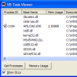

Tips Index
 | Add a Check Box to the Left Hand Side of a Drop-Down Combo BoxIn Microsoft's Outlook Express, there is a find window which allows you to set a date range to search in. You turn this date range on and off by clicking a check box which is embedded in the left hand side of the combo box. The text of the combo box is moved to the left to accommodate the check box. This tip shows you how to emulate this effect by setting the left margin of a drop-down combo box. Last Updated: 21 February 1999 |
| Make a ComboBox drop down when you press the down arrow keyDrop-down combo boxes by default drop down when you press the F4 key. However, not many users know this, and you can make a combo box easier to use by making it drop down in response to the down arrow key instead. Last Updated: 12 October 1998 |
| Create a VB Picture from an API Icon HandleThis tip shows you how create a VB Picture object from an GDI icon handle. This is useful if you are dealing with real GDI icons. Last Updated: 12 October 1998 |
| Change the drop-down width of a Combo BoxThis tip shows you how to get and set the width of the drop down portion of a combo box. It also includes code to automatically set the drop down width based on the contents of a combo box by measuring the size of the text in each combo box item. Last Updated: 12 October 1998 |
| Get System Display Fonts and Non-Client Area SizesThe Non-Client area of a window is defined as the area you don't draw on; i.e. the window border, caption, menu bar and scroll bars. Whilst it is easy to get the colours that Windows uses to display these items (the VB enumeration SystemColorConstants supplies all the OLE_COLOR versions of these colours, and these can easily be converted into an actual colour using the OLETranslateColor function, as described in the tip Get an RGB Colour from an OLE_COLOR), it isn't so straightforward to get the fonts and sizes. Last Updated: 18 August 1998 |
|  | Using PSAPI to get a complete task list and memory usage.PSAPI.DLL is a DLL provided for NT/2000/XP systems which greatly simplifies the job of getting task list and memory usage information. The information is also available in the dyamic data section of the registry, but the format is fairly obstructive and it is a considerable task to extract it programmatically. This tip demonstrates how to use the API to get a list of processes, investigate the memory they are using and the DLLs loaded into their working set. Last Updated: 16 August 1998 |
| Show and Hide a Form's Titlebar at run-timeThis tip shows you how to show and hide the title bar of a window at run-time. To make a window's title bar disappear, you have to remove the control box, the maximise box and the minimise box as well as set the caption of the form to blank. Unfortunately, VB's ControlBox, MinButton and MaxButton properties of a form are read-only so you can normally only do this at design time. However, by manipulating the style of the window using API calls, you can get the same thing to happen at run-time. Last Updated: 9 August 1998 |
| Retrieving the Error Message for a Windows API Call ErrorWhenever an API function call fails, the error code can be retrieved from VB's Err.LastDLLError property. This tip shows you how to retrieve the description for the error from Windows. Last Updated: 9 August 1998 |
| Replace one Colour with another in a Picture using BitBltThis tip shows you how to replace one colour with another in a bitmap. This method uses BitBlt to ensure the operation is as speedy as possible, and will run very quickly. Last Updated: 9 August 1998 |
| How to Shutdown the System in Windows 9x and NTThis tip demonstrates how to shutdown, logoff and/or reboot a system. Shutting down a Windows 9x system is very straightforward - just one API call to ExitWindowsEx is all that is required. However, under NT it is a little more tricky. By default, no application processes under Windows NT have the privilege to shut the system down, and the call to ExitWindowsEx simply fails on calling it. The trick to make it work is to call the API AdjustTokenPrivileges function to enable the calling process to shut the system down. Last Updated: 9 August 1998 |